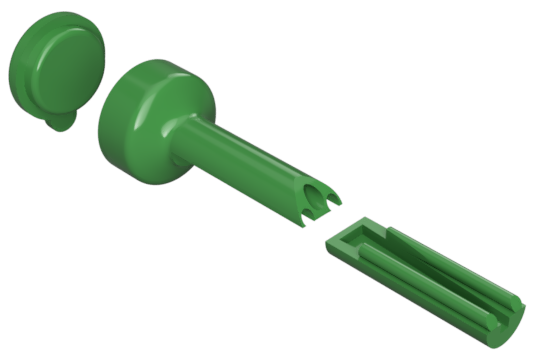
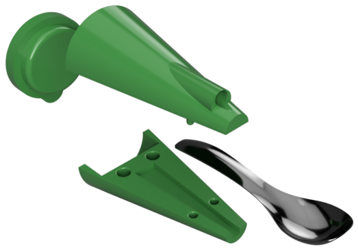
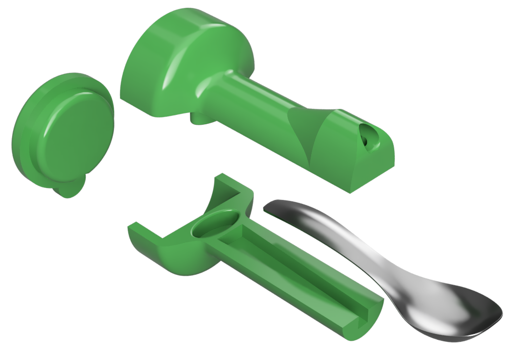
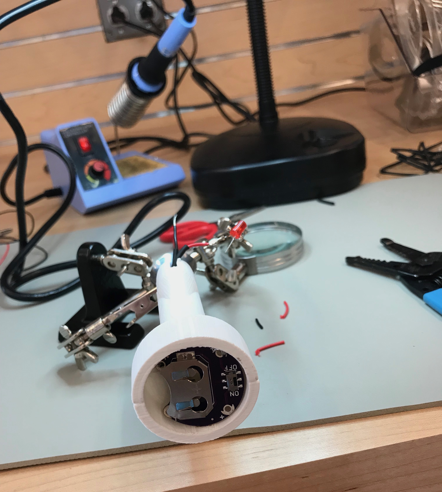

LED Spoon Attachment
This adaptive piece was created alongside my
High Chair Insert project. I designed this for a boy with Cortical Visual Impairment (CVI). He was unable to track a spoon with food on it to his mouth due to his condition, but he was able to find an LED. This helps with his feeding therapy.
The spoon can easily be removed for cleaning, and the back pops off to make battery changing easy.
YEAR
2018
PLATFORM
Fusion 360, MakerBot Replicator+
Process
The final creation had to ultimately include an LED with an easy-to-change battery and a slot for a removable spoon. Throughout the design process, I had to make sure any food/water on the spoon would not get into the electronics compartment. I created a few prototypes to understand how this product would feel in one's hands.
Initial Renderings



Wiring
After 3D printing the body of the product, I ran wires through the back battery compartment into the small hole in the front to attach the LED.
